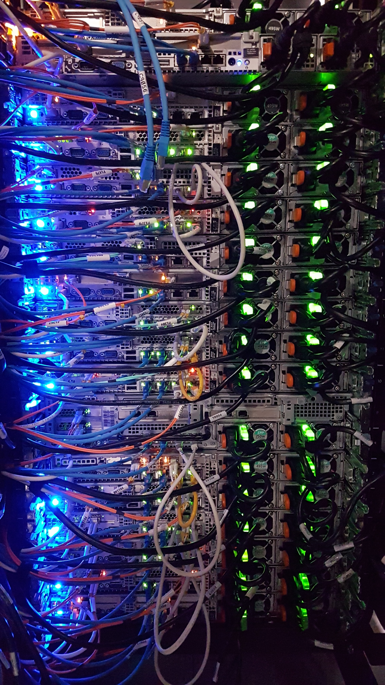

¿Qué se conserva?
- La temática del curso
- Tablas, listas, imágenes y enlaces
- El propósito académico de demostración
- La posibilidad de inspeccionar el código fuente
Comparativa visual
La estructura HTML sigue siendo fundamental, pero ahora se complementa con una hoja de estilos para mejorar legibilidad, organización visual y jerarquía del contenido.
Descripción de la asignatura
Esta asignatura estudia la comunicación entre sistemas, la arquitectura de Internet, el direccionamiento IP y los principales protocolos de transporte y aplicación.
En la parte práctica, los estudiantes trabajan con simuladores, máquinas virtuales y diferentes servicios de red para comprender, a través de la experimentación, el funcionamiento real de la conectividad.
Esta sección corresponde a la versión corregida, de modo que pueda compararse directamente con el bloque defectuoso presente en daniel.html, donde los errores de codificación fueron dejados de manera intencional.
Resumen académico
INTERNET: Redes y Comunicaciones IP aborda la comunicación entre sistemas, la pila de protocolos, el direccionamiento lógico y los servicios que soportan aplicaciones de uso cotidiano.
En el laboratorio, estos conceptos suelen apoyarse con simuladores, máquinas virtuales y servicios básicos desplegados por el estudiante.

| Tema | Pregunta orientadora | Resultado esperado |
|---|---|---|
| Modelo OSI | ¿Qué función cumple cada capa? | Reconocer el proceso de encapsulamiento |
| IPv4 / IPv6 | ¿Cómo se identifican los hosts? | Asignar direcciones correctamente |
| TCP y UDP | ¿Cuándo conviene cada protocolo? | Diferenciar confiabilidad y velocidad |
| Servicios de red | ¿Cómo operan DNS, HTTP y DHCP? | Relacionar servicio, puerto y función |



Compare esta página con la versión HTML puro y observe cómo la estructura puede mantenerse, mientras que CSS transforma la presentación visual sin cambiar el sentido académico del contenido.